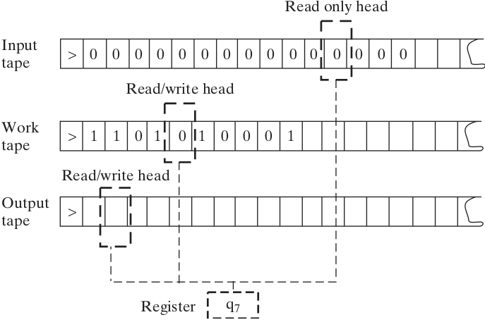

Una máquina de Turing tiene:

Cada regla tiene como entrada:
Y como salida:
En estos ejercicios trabajamos con Máquinas de Turing con 1 cinta, 2 símbolos (1 y 0), que siempre empiezan su ejecución con la cinta puesta a cero, infinita en las dos direcciones. O sea, máquinas sin input.
La idea es describir la ejecución de cada máquina usando la notación “descripción instantánea”.
FIN, escribir FIN | 0 | 1 |
a |1>b|1<a|
b |1<a|FIN|Ejecución:
0a
10b
1a1
0a11
11b1
FIN1.| 0 | 1 |
a |1>b|0<a|
b |FIN|0<a|
2.| 0 | 1 |
a |0>b|1<a|
b |1<a|FIN|
3.| 0 | 1 |
a |1>b|1<a|
b |0<a|FIN|
4.| 0 | 1 |
a |1>b|1<a|
b |1>c|0>c|
c |1<a|FIN|5.| 0 | 1 |
a |1>b|0<c|
b |0>c|1>c|
c |1<a|FIN|
6.| 0 | 1 | 2 |
a |1>b|1<b|FIN|
b |2<a|2>b|FIN|
7.| 0 | 1 |
a |1>b|1<c|
b |1>c|FIN|
c |1<a|0<b|Ejecutar las máquinas siguientes. ¿Qué problema tienen? ¿Pueden explicar qué pasa en cada caso?
1.| 0 | 1 |
a |1>b|1>b|
b |1>a|FIN|
2.| 0 | 1 |
a |1>a|0<b|
b |1<a|FIN|
3.| 0 | 1 |
a |1>b|0>b|
b |0<a|FIN|Una MT es un tuple (k, Γ, Q, δ) con:
Configuración de una máquina = estado activo + contenido de sus cintas + posición de los cabezales.
Configuración inicial con una entrada x ∈ {0, 1}*:
Empieza con la configuración inicial y aplica pasos de acuerdo a su función de transición,
Dada x ∈ {0, 1}*, una corrida de una máquina M con entrada x puede:
En algunos lados, se define que una MT tiene una cinta de output, donde se escribe el resultado del cálculo, y que tiene un solo estado de detencion qhalt.
En el artículo de Turing (“On Computable Numbers”), las máquinas no se detienen y producen secuencias infinitas de dígitos de nombres reales.
Describir una MT de 1 cinta que llega al estado qa si su input es una palabra de la forma 11..1 (solo tiene símbolos 1), sino llega a qr.
Describir una Máquina de Turing de 1 cinta que llega al estado qa si su input es una palabra de la forma 010101..01 (empezando en 0 y terminando en 1), sino llega a qr.
Describir una MT de 2 cintas que llega al estado qa si su input es una palabra de la forma 00..011..1 donde la cantidad de 1 es igual a la cantidad de 0, sino llega a qr.
Describir una MT de 2 cintas que detecta palabras capicúas. ¿Se puede hacer con una sola cinta?
FIN